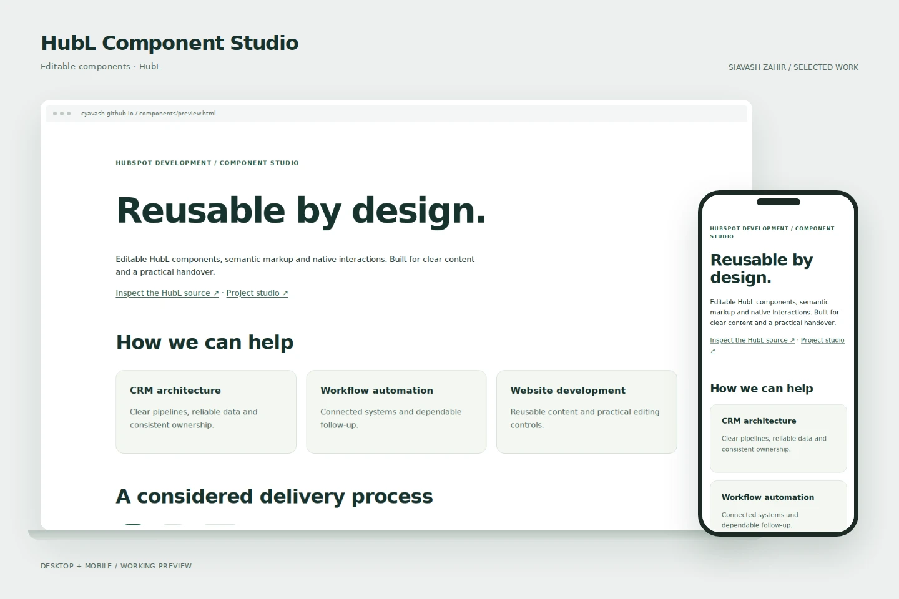
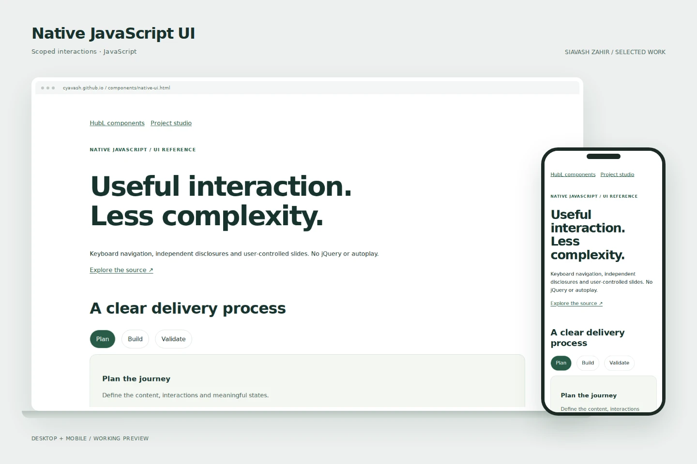
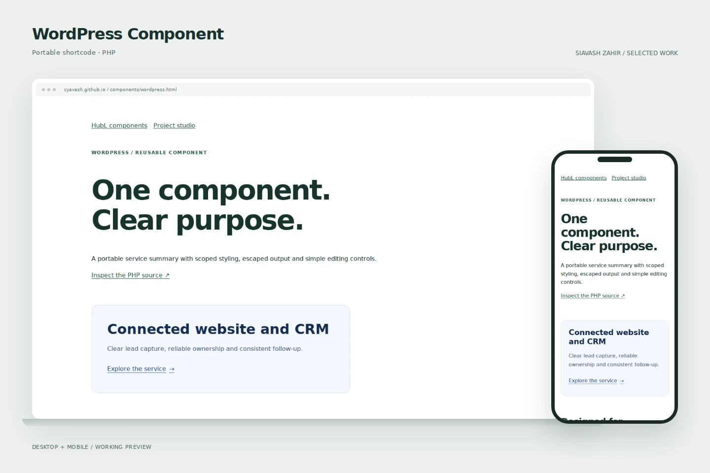
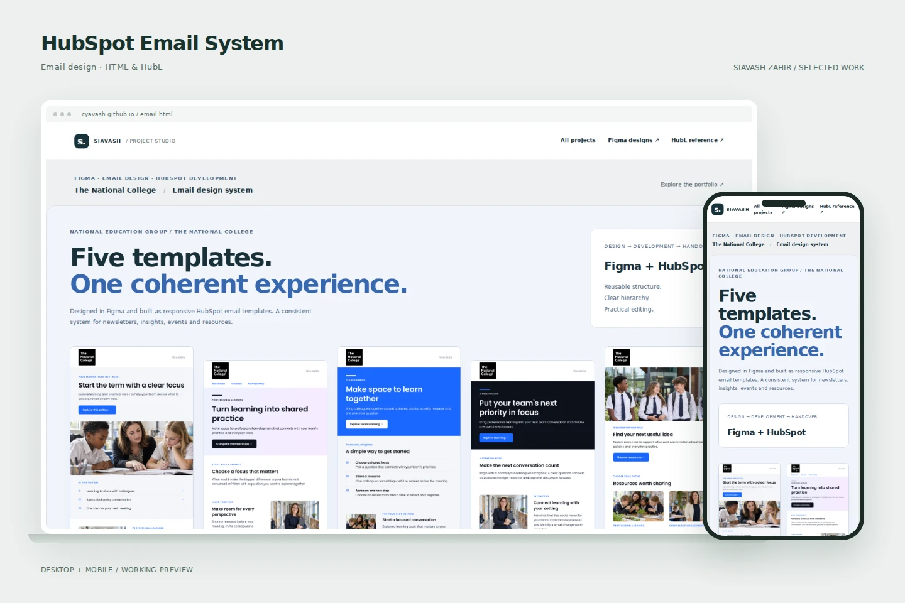

Service Hub · Breeze · CRM
Enveseur
Service Hub architecture, multilingual support, knowledge sources and human escalation.
HUBSPOT SOLUTIONS ARCHITECT & DEVELOPER
Public reference builds spanning HubSpot CMS, WordPress, CRM architecture and automation. Open the interface, try the interactions and inspect the code.
Service Hub · Breeze · CRM
Service Hub architecture, multilingual support, knowledge sources and human escalation.

Figma · HubL · HubSpot CMS
Figma design, HubL development, reusable modules and connected lead capture.

WordPress · HubSpot · Data quality
WordPress design and development connected to HubSpot CRM, lifecycle tracking and reporting.

WordPress · HubSpot · Breeze
A four-step qualification journey with HubSpot, automated follow-up and meeting booking.

Zapier · HubSpot · Integrations
Zapier and HubSpot intake matching, create/update controls and submission associations.

CRM architecture · Intake · Ownership
A concise CRM architecture example covering intake, ownership and follow-up.

HubL · JavaScript · Quote pricing
A branded quote reference with billing choices, optional services and print layouts.

Figma · HubSpot Email · HTML & HubL
Figma design and responsive HubSpot email development across five reusable formats.

HubSpot CMS · HubL · Native JavaScript
HubSpot CMS implementation with reusable modules, native navigation, accessible interactions and maintainable source.

HubSpot CMS · HubL · Native JavaScript
HubSpot layouts and custom modules with native JavaScript, semantic structure and practical content editing.
REUSABLE DEVELOPMENT
Live previews, screenshots and code for HubL, native JavaScript, WordPress and email development.

Editable components · HubL
Service cards, native FAQs and keyboard tabs with named editing fields.

Scoped interactions · JavaScript
Independent disclosures, keyboard navigation and user-controlled carousels.

Portable shortcode · PHP
Scoped styling, escaped output and a focused reusable service summary.

Email design · HTML & HubL
Five design previews and a separate responsive HubL coding reference.
ARCHITECTURE + IMPLEMENTATION
13+ years across web development, CRM and business systems. Figma design, native JavaScript, HubL, WordPress, integrations and practical handover.
The public builds use sample records and interface states. Production client data and internal workflow rules remain private.